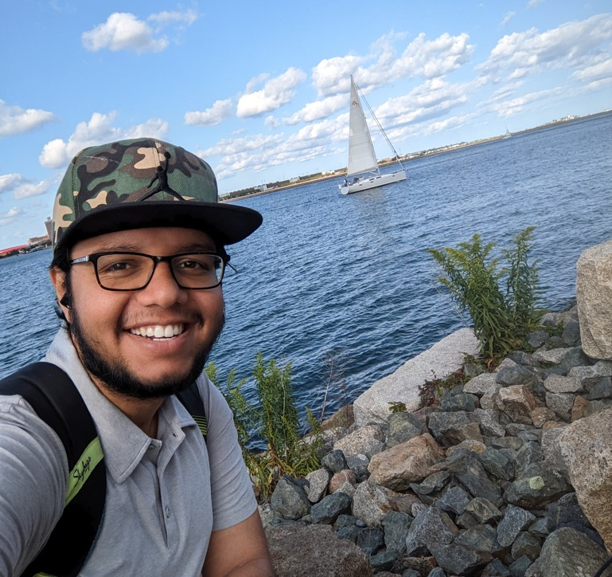

01
Visual-Inertial SLAM
Tightly-coupled visual-inertial odometry using IMU pre-integration and stereo features for robust pose estimation in GPS-denied environments.
I build systems that perceive, decide, and act — from autonomous drones with sensor fusion pipelines, to the perception models behind what they see, to the LLM agents that reason about what they’ve learned.

I’m a robotics engineer working at the intersection of physical autonomy, computer vision, and applied AI. My work spans the stack — sensor fusion and SLAM on real hardware, the perception models behind what robots see, and the LLM systems that reason about what they’ve learned.
Today I write surgical robotics software at Globus Medical, and on the side I’m building Metrux AI — an interview platform that tests senior engineering judgment in the AI-coding era. Before that, I built the Robotics & AI department at Ideal Institute of Technology from zero: nine engineers, ten paying customers, $300K revenue in months. And before that, I co-founded a defense AI startup selected for DRDO’s Technology Development Fund at INR 10 crore (~$1.2M) before COVID forced us to sunset.
MS in Robotics from Northeastern University. BTech in Electronics & Communication Engineering from NIT Surat.
Tightly-coupled visual-inertial odometry using IMU pre-integration and stereo features for robust pose estimation in GPS-denied environments.
ROS-based perception pipeline that fuses RGB and depth to flag road hazards in real time on a moving platform.
GPS, IMU, and magnetometer fusion for vehicle state estimation, with Allan-variance noise characterization and trajectory reconstruction.
Perception, planning, and control stack for a differential-drive robot navigating unstructured terrain.
Live object detection on streaming video with sub-frame latency, written in modern C++ on OpenCV.
Camera-calibration-driven AR overlay that projects 3D content onto detected planar markers in live video.
Feature-extraction and similarity-search system that ranks images by visual content rather than metadata.
Deep-learning model that upscales low-resolution imagery while preserving structural detail and edge fidelity.
Retrieval-augmented question answering over PDFs, using LLM embeddings and semantic chunking to ground answers in source text.
Speech-to-text → LLM → text-to-speech loop that turns a language model into a hands-free conversational agent.
Conversational agent with context retention, built on the OpenAI chat completion API and a lightweight memory layer.
Wearable Robotics. Advanced Machine Learning. Pattern Recognition & Computer Vision. Robot Sensing & Navigation. Robot Mechanics & Control. Mobile Robotics. Robotics Science & Systems.
Engineering Mathematics. Microprocessor Peripheral & Interfacing. Embedded Systems. Advanced Processor Architecture. Digital Signal Processing.